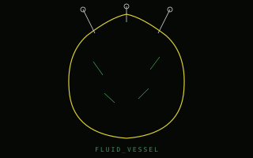
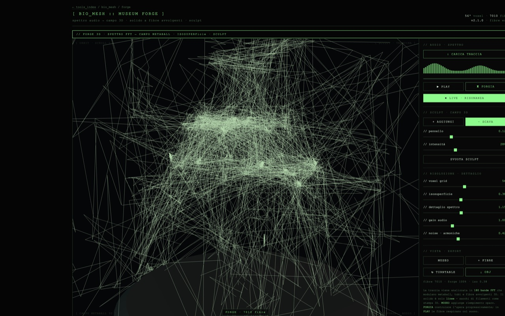
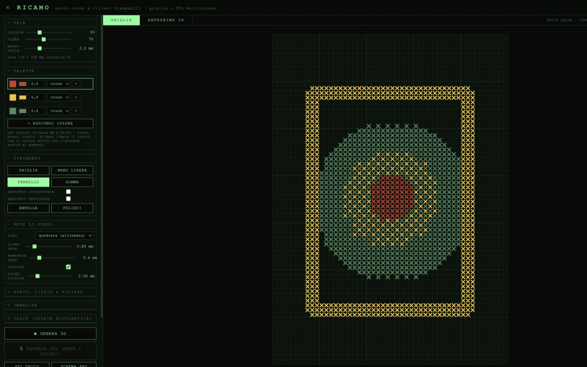
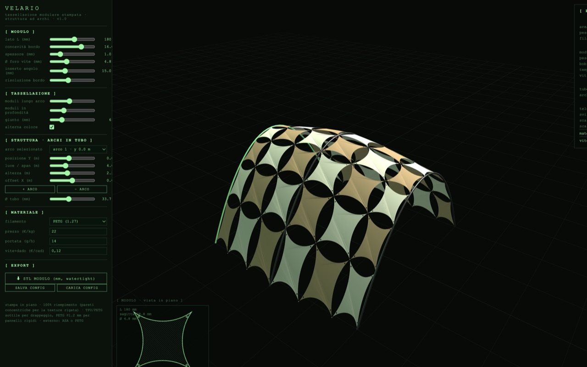
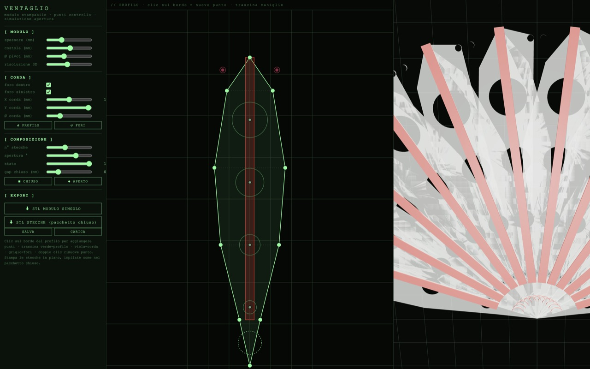
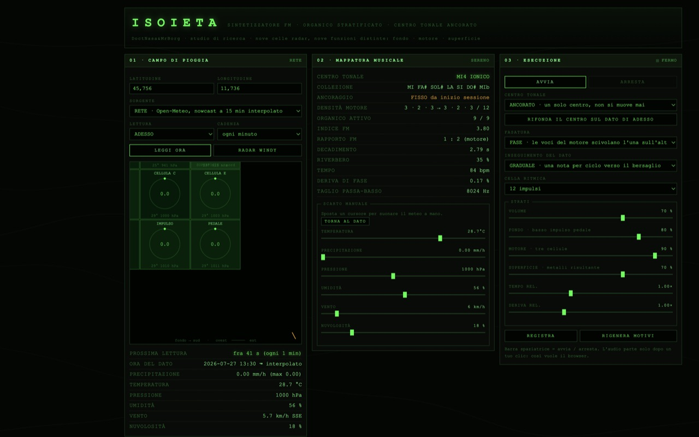
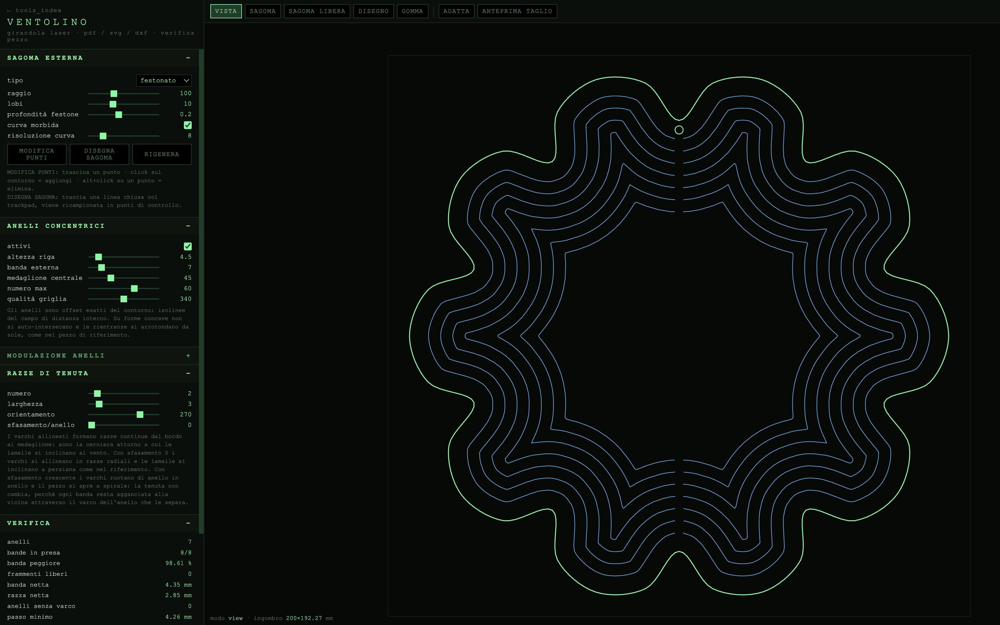
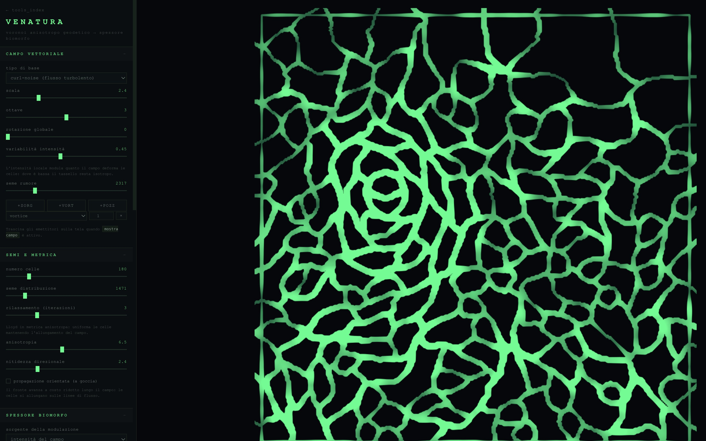
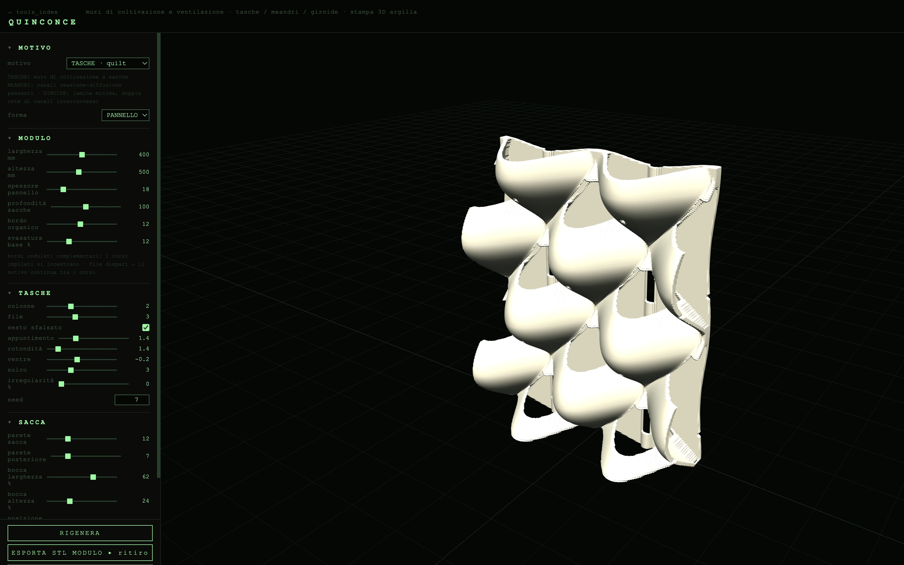

Studio audio modulare costruito su Tone.js. Combina sintetizzatori multi-voce (pad, lead, bass, drones), sampler con triggering manuale e a pattern, una catena di effetti dub (riverbero, delay con feedback, auto-filter), e un registratore integrato per catturare la jam in tempo reale.
PORTAL — modalità condivisa LAN/rete: ogni operatore suona il proprio CUORE_STATICO, i mix si sommano, e una colonna laterale traccia le strade sonore nello spazio colore (spettro → percorso per utente).
L'estetica è quella di un monitor di telemetria post-punk — display verde fosforo, meter dB, indicatore di pulsazione cardiaca. Pensato per sessioni dal vivo o registrazione veloce di idee, con tutti i parametri sempre visibili e nessun menu nascosto.
- MIX — gain individuali per synth/sampler/noise, master volume con limiter
- SYNTH — pad/lead/bass tonale + drones, oscillatori multipli con detune e filtri
- SAMPLER — caricamento file, trigger manuale, pattern step
- FX — Freeverb, FeedbackDelay 8n., AutoFilter modulato per il dub bus
- REC — registrazione MediaStream del master output, export WAV
- PORTAL — sessione WebRTC multi-utente, mix sommato, viz tracce condivise
- ▶ PLAY — avvia/ferma l'engine globale e abilita il contesto audio
- 🔔 BEEP — test tone per verificare il routing audio
- ⚡ STRIKE — colpo singolo con strike di percussione e accordo
- ⛔ PANIC — kill switch, taglia tutte le voci in coda
Funziona su tutti i browser moderni che supportano Web Audio API e MediaStream. Su iOS Safari serve un tap iniziale per attivare il context audio (il pulsante PLAY lo fa automaticamente). Su mobile la latenza è leggermente più alta — è normale, dipende dal browser, non dal tool.
// Tone.js v14.7.77 caricato da CDN — serve connessione la prima volta, poi è in cache.
synth + sampler + recorder + dub_engine completo, MediaStream WAV export
Cuore_Statico non ha preset save/load nel localStorage — è un tool live-performance, lo stato è effimero per design. Per esportare il lavoro usa la sezione REC che produce un WAV scaricabile.

Generatore parametrico di cornici biomorfiche per speaker da fondere in acciaio. Combina pattern di meandri di marea (ispirati alle barene del lido di Venezia) con un sistema di tre attrattori-vortice trascinabili che funzionano da generatori di tributari connessi, simulando la formazione di reti deltizie.
L'output finale è un OBJ a heightmap piramidale, pronto per stampa PLA (ugello 0.4 mm) e fusione in sabbia. La base piatta e i fianchi inclinati garantiscono il distacco pulito dal negativo.
- Genera pattern parametrico nel viewport (frame 600×400 con canale 15×5 mm)
- Posiziona 3 attrattori trascinabili con campo/swirl/turbolenza individuali
- Configura emettitori: tributari sempre connessi al target più vicino
- Switch a VIEW: RELIEF per anteprima heightmap con depth-encoded shading
- Export OBJ con base piatta + piramidi triangolari (no sottosquadri)
- Stampa PLA → carteggia → primer → impronta in sabbia → fusione


// i preset sono salvati nel browser locale. Per spostarli usa export/import. Dentro al tool premi ⌘S per crearne di nuovi.

Generatore 3D di contenitori d'acqua a membrana biomorfa. Simula un vaso in latex teso da uncini metallici con un solver Position-Based Dynamics: pressione interna, elasticità, tensione superficiale e preservazione del volume. La mesh di rendering include parete spessa e bordo chiuso, pronta per export OBJ.
Click sulla superficie per aggiungere uncini, trascina per deformare, Shift+click per rimuovere. Tre punti di sospensione iniziali sul bordo superiore. Materiale traslucido ambra in viewport.
- PBD — pressione, elasticità, tensione, smorzamento
- UNCINI — pin su vertice, trascinabili con cavo di sospensione
- VASO — profilo biomorfo parametrico, bordo rigido
- PARETE — shell spessa per export watertight
- EXPORT — OBJ chiuso via OBJExporter
- Regola pressione, elasticità e spessore parete
- Click sulla membrana per piazzare uncini
- Trascina uncini per tensionare la forma
- Export OBJ → Blender / slicer / silicone

Carica audio: 180 bande FFT modulano un campo metaball 3D (56–72³ voxel). Il solido è solo fibre avvolgenti — linee che seguono l'isosuperficie come sacchi di filamento / stampa 3D. Forge progressiva, sculpt +/−, risonanza live, export OBJ.
- FORGIA · costruzione progressiva da spettro completo
- LIVE · scultura che respira durante il play
- Sculpt campo 3D · voxel 40–72 · export OBJ
- FFT log-spaced → N bande = N polysuperfici
- Profilo 8 tap per dettaglio locale
- Deformazione sferica + FBM + tunnel
- Griglia 2×3 (default 6 forme)

Editor di ricamo digitale su griglia: disegna punto croce, punti lisci e rilievi a mano libera con palette multicolore. Ogni colore diventa una parte STL separata, pronta per stampa multicolore (AMS) o assemblaggio come oggetto unico con più parti in Bambu Studio.
- Disegna sulla griglia 2D o passa alla vista 3D del rilievo
- Configura passo punto, altezza rilievo e livelli da 0.2 mm
- Genera mesh analitiche per colore (rete, punti, rilievo)
- Export STL per colore o STL unico · calco negativo opzionale

Configuratore di velari modulari stampati in 3D: modulo concavo con fori per viti, tassellazione su struttura ad archi in tubo, anteprima Three.js e preventivo materiale/tempo in tempo reale.
- MODULO — lato, concavità, spessore, fori, risoluzione bordo
- TASSEL — griglia moduli, giunto, alternanza colore
- ARCHI — span, altezza, diametro tubo, posizione multipla
- EXPORT — STL modulo watertight · salva/carica config JSON

Designer parametrico per ventagli stampati in 3D ispirati ai moduli sovrapposti con costola centrale, fori graduated e corda perimetrale. Disegna il profilo della stecca con punti controllo trascinabili, simula l'assemblaggio aperto/chiuso e esporta STL per stampa.
- Trascina i punti sul profilo (metà destra, specchio automatico)
- Regola spessore, costola rossa, foro pivot e fori decorativi
- Slider stato: da pacchetto chiuso (stecche impilate) ad aperto
- Export STL modulo singolo o pacchetto chiuso per stampa batch

Sintetizzatore FM meteorologico: legge precipitazione, temperatura, pressione, umidità, vento e nuvolosità (live Open-Meteo o fronte simulato) e li mappa su nove celle radar — fondo, motore, superficie — con centro tonale ancorato e organico stratificato.
- Imposta lat/lon e sorgente (RETE o SIMULATA), poi LEGGI ORA
- Osserva mappatura: centro tonale, densità motore, indice/rapporto FM
- Usa lo scarto manuale per suonare il meteo a mano, o torna al dato
- Apri il radar Windy in overlay quando serve contesto geografico

Generatore percorsi laser per girandole: sagoma festonata/editabile, anelli da campo di distanza, razze di tenuta, verifica pezzo (kerf + frammenti), disegno/PNG centrale, export PDF/SVG/DXF in mm.
- Scegli sagoma (festonato, cerchio, punti, libero)
- Regola passo, banda esterna, medaglione e razze
- Controlla verifica pezzo · disegno interno
- Export PDF / SVG / DXF 1:1 mm

Generatore di venature biomorfe: Voronoi anisotropo deformato da un campo vettoriale (curl, vortice, sella…), spessore variabile lungo le celle, export PNG/SVG/STL.
- Scegli campo vettoriale e densità semi
- Aggiungi sorgenti / vortici / pozzi
- Regola spessore e palette
- Export PNG · SVG · STL

Generatore di muri di coltivazione e ventilazione in argilla stampata: moduli a tasche (quilt), meandri passanti o giroide TPMS, vista modulo/muro, export STL con compensazione ritiro.
- Scegli motivo (tasche / meandri / giroide) e forma
- Regola modulo, sacche o struttura canali
- Anteprima 3D · composizione muro
- Export STL modulo o muro intero